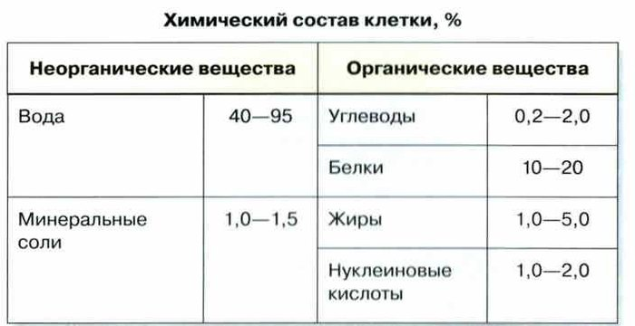
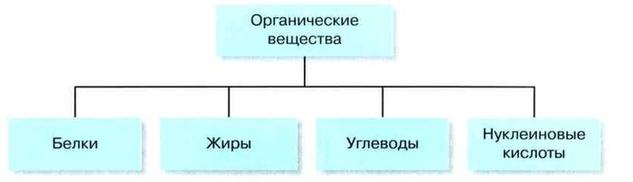
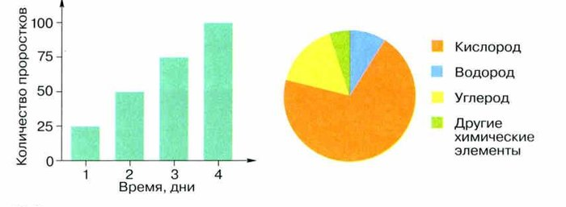
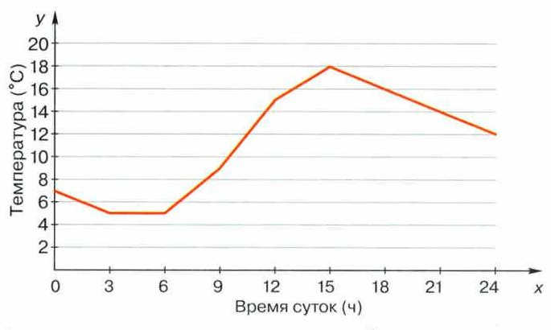
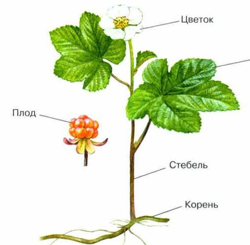
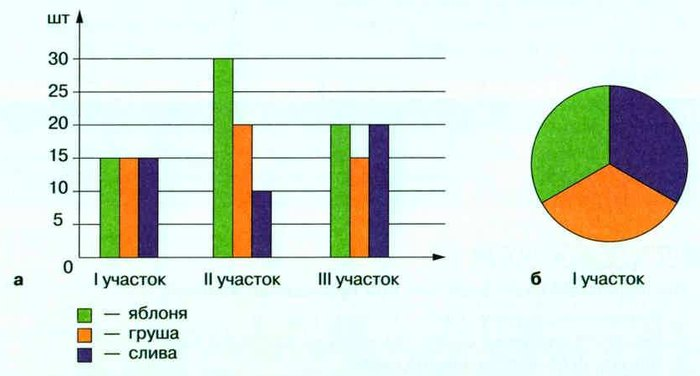
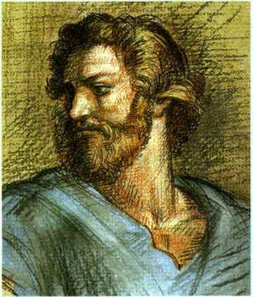

Метод описания в биологии
Результаты любого исследования нужно записать. Например, в виде научного описания. Это описательный метод — им пользовались ещё в древности.
Древнегреческий учёный Аристотель (IV век до н. э.) в книге «История животных» описал несколько сотен видов животных: как они устроены, как размножаются и развиваются, где живут и чем полезны людям. Его труды были зоологической энциклопедией своего времени, а самого Аристотеля называют отцом зоологии.
Описание нужно и сегодня: с ним можно разбирать данные, сравнивать их и находить закономерности.
Описания бывают двух видов. Качественное просто рассказывает, что произошло и в каком порядке. Количественное появляется после измерений — в нём есть числа.
Пример. Запись в дневнике «сегодня из яиц наконец-то вылупились птенцы» — качественное описание. Если ещё указать, сколько птенцов вылупилось, какого они размера и сколько весят, — получится и количественное.
По форме описание бывает словесным (устно или письменно), наглядным (рисунки, фото, видео) и схематическим (схемы, графики, знаки). В исследованиях обычно используют все три.
Чтобы информацией было удобно пользоваться, учёные часто переводят её на язык понятий, знаков, схем, рисунков, графиков и цифр.
Результаты любого исследования должны быть зафиксированы тем или иным способом, например в виде научного описания. Описательный метод широко применялся ещё учёными древности. Так, древнегреческий философ Аристотель (IV в. до н. э.) в своём труде «История животных» описал несколько сотен видов животных, подробно рассказав об их строении, размножении и развитии, распространении, а также хозяйственном значении. Труды Аристотеля были для своего времени зоологической энциклопедией, а её автора теперь вполне заслуженно называют отцом зоологии.
Этот метод не потерял своего значения и сегодня. Описание объекта позволяет анализировать полученные данные, сравнивать их с другими, находить определённые закономерности в существовании объекта исследования. Обычно описания подразделяют на качественные, которые просто излагают последовательность этапов наблюдения, и количественные, которые формируются в результате измерительных процедур. Так, если вы записали в дневнике наблюдений «сегодня из яиц наконец-то вылупились птенцы», то это пример качественного описания. А если вы ещё указали количество вылупившихся птенцов, их размеры и вес, то вы составили и количественное описание.
Описание объекта или явления может быть словесным (устным и письменным), наглядным (использование рисунков, фотографий, видеозаписи) и схематическим (использование схем, графиков, знаков и т. д). В исследованиях, как правило, используются все эти виды описания.
Для более удобного использования полученной информации, учёные часто переводят её на язык понятий, знаков, схем, рисунков, графиков, цифр.
«Люся вышла из домика и понюхала сено»
«Люся весит 252 г, за 10 минут вышла из домика 3 раза»
В количественном описании есть числа — их дают измерения из §5.
1. Почему Аристотеля называют отцом зоологии?
2. Запись «вылупились птенцы» — какое описание? Что добавить, чтобы оно стало количественным?
Таблицы, схемы, диаграммы, графики
Чтобы навести порядок в результатах, учёные пользуются таблицами, схемами, диаграммами и графиками. С ними легче сравнить объекты, разобрать данные, найти закономерности и даже сделать прогноз.
Таблица — данные в строках и столбцах (рис. 28).
Схема — фигуры (прямоугольники, круги) с надписями, соединённые линиями или стрелками (рис. 29). Фигуры — это части объекта, а линии — связи между ними.
Диаграмма показывает, как соотносятся величины. Столбчатая — величины в виде столбиков: чем больше величина, тем выше столбик. Круговая — круг, поделённый на части по величине (рис. 30).
График — чертёж, где линией показаны числа, которые описывают процесс или явление (рис. 31).
Для упорядочивания результатов исследования учёные используют таблицы, схемы, диаграммы и графики. Они позволяют сопоставить характеристики изучаемых объектов, проанализировать полученные данные, сравнить их, найти закономерности и даже сделать прогнозы.
Таблица — это представление количественных или других данных в форме строк и столбцов (рис. 28). Ещё одним графическим средством представления данных являются схемы (рис. 29). Они представляют собой фигуры (прямоугольники, многоугольники, круги) с надписями, соединённые линиями или стрелками. Фигуры иллюстрируют различные структурные компоненты того или иного объекта, а линии (стрелки) раскрывают связи между ними.
Диаграмма — графическое представление данных, позволяющее оценить соотношение нескольких величин. Диаграммы бывают столбчатые и круговые. Столбчатые диаграммы демонстрируют величины в виде прямоугольников одинаковой ширины, вытянутых вверх, — столбиков. Высота столбика соответствует изображаемой величине. Круговая диаграмма — это круг, разделённый на секторы в соответствии с изображаемыми ими величинами (рис. 30).
График — это чертёж, на котором наглядно, при помощи линий, показаны какие-либо числовые данные, описывающие процессы или явления (рис. 31).




▲ По этому графику — задание 3 в «Моей лаборатории».
столбики: чем выше, тем больше
круг из кусочков: чем больше кусок, тем больше доля
Столбики — сравнить величины. Круг — увидеть долю от целого.
3. Чем схема отличается от таблицы?
4. Какие два вида диаграмм называет учебник? Как они устроены?
5. По рис. 31: когда за сутки было теплее всего и сколько градусов?
Биологический рисунок и анализ
Ещё один способ записать наблюдения — биологический рисунок (рис. 32).
Чем он отличается от обычного? На нём точно переданы все мелкие детали объекта и сохранены его размеры. Части подписаны.
Главное свойство биологического рисунка — наглядность. Посмотрев на правильный рисунок, любой поймёт, как устроен объект. А словесное описание понятно далеко не всем.
Сейчас в науке рисунок часто заменяют фотографией. Но рисовать биологические объекты очень полезно: это развивает наблюдательность и помогает лучше запомнить материал.
Когда ты изучаешь строение организма или явление природы, ты пользуешься анализом — даже не замечая этого. Анализ — это разделение целого на части и изучение каждой части и её свойств.
Ещё одним способом оформления результатов наблюдений является биологический рисунок (рис. 32). От обычного рисунка он отличается тем, что на нём должны быть точно переданы все мельчайшие детали наблюдаемого объекта, а также сохранены их размеры. Биологический рисунок обладает важным свойством — наглядностью. Благодаря этому свойству любой человек может понять, как устроен биологический объект, поглядев на правильно выполненный рисунок, тогда как описание строения объекта может быть понятно далеко не всем. И хотя сейчас рисунок в науке повсеместно вытесняется фотографией, тем не менее рисование биологических объектов весьма полезно для будущих исследователей. Оно развивает наблюдательность и способствует лучшему усвоению учебного материала.
Изучая строение организмов или какое-либо явление природы, вы, сами того не подозревая, пользуетесь приёмом анализа, который является важным составным элементом мышления.
Анализ — это расчленение, разделение целого на составные части, выделение отдельных сторон и свойств объекта или явления. Чтобы ваша работа была эффективной, познакомьтесь с правилами проведения анализа и применяйте их.

можно в своём стиле, придумывать, украшать
точно как есть: все детали, верные размеры, подписи частей
Обычный рисунок — как я вижу. Биологический — как есть на самом деле.
6. Чем биологический рисунок отличается от обычного?
7. Зачем рисовать биологические объекты, если есть фотография?
8. Посмотри на рис. 32. Какие части растения подписаны? Это пример анализа?
Итоги и «Моя лаборатория»
Описательный метод · Описания: качественные и количественные · Таблица · Схема · Диаграмма · График · Биологический рисунок · Анализ
- С какой целью проводятся описания в ходе биологических исследований?
- Какие требования предъявляются к научному описанию?
- Чем количественное описание отличается от качественного?
- Для чего в научных исследованиях могут использоваться таблицы, схемы, диаграммы и графики?
- Что такое таблица? С какой целью она применяется в научных описаниях?
- Чем схема отличается от таблицы?
- С какой целью в научных описаниях используются диаграммы? Какие виды диаграмм вам известны?
- Какой вид представления научной информации называется графиком? С какой целью в научных описаниях он используется?
- Какой приём мыслительных действий мы обязательно используем при проведении научного исследования?
Почему исследование, результаты которого представлены в виде таблицы, диаграммы или графика, легче анализировать, чем те, которые их не содержат?
- Используя текст параграфа, сформулируйте требования, предъявляемые к описаниям.
- Используя рисунок 28, представьте химический состав клетки в виде круговой диаграммы.
- Рассмотрев график на рисунке 31, определите, в какие промежутки времени температура воздуха снижается, повышается, повышается наиболее быстро? Подумайте, от чего может зависеть изменение температуры воздуха в течение суток? Какими приборами нужно воспользоваться для проведения подобных измерений и каковы должны быть их шкалы деления?
- Рассмотрите внимательно рисунок 33. У бабушки на огороде 3 свободных участка, она решила посадить там различные деревья — яблони, груши и сливы. На первом участке она посадила одинаковое количество деревьев — по 15 штук (рис. 33, а), на втором и третьем участке — разное количество. Представьте данные по остальным двум участкам в виде круговой диаграммы (рис. 33, б). Переведите информацию из диаграмм в табличную форму и заполните таблицу в рабочей тетради.
Сначала попробуй сама по рис. 31.
- С 0 до 3 часов линия идёт вниз — температура снижается (с 7 до 5 °C).
- С 3 до 6 часов линия ровная — температура не меняется (5 °C).
- С 6 до 15 часов линия идёт вверх — повышается. Круче всего — с 9 до 12 часов: с 9 до 15 °C, на 6 градусов за 3 часа.
- С 15 до 24 часов — снова снижается (с 18 до 12 °C).
- Прибор — термометр. Подумай сама: почему днём теплее, чем ночью?

Сначала посчитай столбики сама.
По столбикам рис. 33, а: II участок — 30 яблонь, 20 груш, 10 слив; III участок — 20 яблонь, 15 груш, 20 слив.
Таблица: яблоня — 15 / 30 / 20; груша — 15 / 20 / 15; слива — 15 / 10 / 20 (I / II / III участок).

Аристотель (384—322 до н. э.) — великий древнегреческий учёный. Он писал о философии, физике, биологии, психологии, логике и многом другом.
Он привёл в систему почти все знания своего времени. Его система научных знаний служила в Европе больше полутора тысяч лет.
Аристотель описал, где живут разные растения и животные и чем они отличаются. Особенно много он изучал животных и заложил основы зоологии. Всего он описал 540 разновидностей животных.
Аристотель (384—322 до н. э.) — великий древнегреческий учёный, написал большое количество сочинений по философии, физике, биологии, психологии, логике, этике, политике, поэтике.
Он систематизировал практически все современное ему знание. Выстроенная им система научных знаний широко использовалась в Европе более полутора тысячелетий.
Аристотель сделал многочисленные описания мест обитания различных растений и животных, указав их особенности. Особое внимание он уделял изучению животных, заложив научные основы зоологии. Всего Аристотель описал 540 разновидностей животных.
Прочитай научное и художественное описание цветка лилии. Сравни их и сделай вывод: в чём разница?
Научное описание цветка лилии
Цветок лилии состоит из 6 раздельных лепестков, 6 тычинок с длинными тычиночными нитями и крупными удлинёнными пыльниками. Завязь у лилии трёхгнёздная, пестик — с трёхраздельным рыльцем. Основные формы цветков — бокаловидная, чашевидная, воронковидная, колокольчатая.
Художественное описание цветка лилии
Тёмной ночью белых лилий
Сон неясный тих.
Ветерок ночной прохладой
Овевает их.
Ночь их чашечки закрыла,
Ночь хранит цветы
В одеянии невинном
Чистой красоты.
И. А. Бунин
1. Прочитайте тексты с научным и художественным описанием цветка лилии. 2. Сравните научное и художественное описание биологического объекта. 3. Сделайте вывод, в чём заключается их разница.
Научное описание цветка лилии
Цветок лилии состоит из 6 раздельных лепестков, 6 тычинок с длинными тычиночными нитями и крупными удлинёнными пыльниками. Завязь у лилии трёхгнёздная, пестик — с трёхраздельным рыльцем. Основные формы цветков — бокаловидная, чашевидная, воронковидная, колокольчатая.
Художественное описание цветка лилии
Тёмной ночью белых лилий
Сон неясный тих.
Ветерок ночной прохладой
Овевает их.
Ночь их чашечки закрыла,
Ночь хранит цветы
В одеянии невинном
Чистой красоты.
И. А. Бунин
числа и точные слова: 6 лепестков, 6 тычинок
чувства и образы: сон, ночь, красота
Научное отвечает на вопрос «как устроено?», художественное — «что я чувствую?». Помнишь научное и ненаучное познание из §4?
- Внимательно изучи объект (явление) целиком.
- Мысленно раздели его на части.
- Изучи особенности каждой части.
- Установи, как части связаны между собой.
- Постарайся понять, зачем нужна каждая часть.
Чтобы изучать живую природу, учёному важно выбрать правильный метод: наблюдение, описание, эксперимент, измерение.
Наблюдение — восприятие объектов и явлений органами чувств, без вмешательства. Эксперимент — исследование в специально созданных условиях; он сложнее наблюдения и отличается активным воздействием на объект. С его помощью подтверждают или опровергают предположения.
Результаты описывают качественно (просто описание) и количественно (по точным измерениям). Измерение — определение числовых значений признаков объекта с помощью приборов.
Результаты любого исследования записывают в виде научного описания — часто с таблицами, схемами и диаграммами. Изучая строение организмов или явления природы, мы пользуемся анализом.
Каждому человеку нужно уметь находить информацию, критически её оценивать, анализировать и применять в жизни.
Для познания живой природы учёному очень важно правильно выбрать путь исследования или метод, которым он будет пользоваться. В биологии применяются различные методы исследования: наблюдение, описание, эксперимент, измерение.
Различают практические и теоретические методы. К практическим методам относят наблюдение и эксперимент (опыт). Важнейшая задача научного метода познания природы — это получить ответ на поставленный вопрос.
Наблюдение — это восприятие природных объектов или явлений с помощью органов чувств. В ходе наблюдения объекта или явления человек лишь фиксирует результаты, не вмешиваясь в сам процесс.
Эксперимент — исследование, проводимое в специально созданных и контролируемых условиях, которые позволяют установить, как эти условия влияют на объект или явление. Эксперимент является куда более сложным, чем наблюдение, практическим методом. С его помощью можно подтвердить или опровергнуть то или иное предположение. От наблюдения эксперимент отличается активным воздействием на изучаемый объект.
Результаты как наблюдений, так и экспериментов могут быть описаны как качественно и количественно. Качественным является простое словесное описание, количественное же описание основано на точном измерении. Измерение — это определение количественных значений тех или иных признаков изучаемого объекта или явления с помощью специальных технических устройств. Измерить какую-либо величину означает то, что её сравнивают с одной из общепринятых единиц измерения.
Результаты любого исследования должны быть зафиксированы в виде научного описания. Описание можно рассматривать как завершающий этап исследования. При составлении описания часто используют таблицы, графики, схемы и диаграммы.
Изучая строение организмов или какое-либо явление природы, мы используем приём анализа, который является важным составным элементом мышления. Каждый человек должен уметь не только извлекать информацию из различных источников, но и критически её оценивать, анализировать и использовать на практике для решения различных жизненных проблем.
- Методы познания живой природы и их значение.
- Практические и теоретические методы познания живой природы.
- Наблюдение как метод познания природы.
- Эксперимент как метод познания природы.
- Измерение как метод познания природы.
- Описание как метод познания природы.
- Использование графических средств при описании результатов исследования.
Проверь себя
Ошиблась — не страшно, попробуй другую кнопку.
«Из яиц вылупились птенцы»
Без чисел — качественное.
«Вылупилось 4 птенца, каждый весит 8 г»
Есть числа из измерений.
«Муравьи пошли к мёду»
Просто что произошло.
«Через час у мёда 12 муравьёв, у яблока 3»
Посчитали — количественное.
«Лук на окне позеленел»
Без измерений.
«Лист лука на 10-й день — 8 см»
Измерили рулеткой.
Строки и столбцы с числами
Так устроена таблица (рис. 28).
Прямоугольники с надписями, соединённые стрелками
Это схема (рис. 29).
Круг, поделённый на кусочки
Круговая диаграмма.
Столбики разной высоты
Столбчатая диаграмма.
Линия температуры за сутки в «Яндекс Погоде»
Линия, показывающая числа процесса, — график.
1. Кого называют отцом зоологии?
2. Чем количественное описание отличается от качественного?
3. Как устроена круговая диаграмма?
4. Чем биологический рисунок отличается от обычного?
5. Что такое анализ?
6. По рис. 31: когда температура не менялась?
Расскажи вслух
Описательный метод
- Результаты исследования записывают в виде научного описания; метод известен со времён Аристотеля.
- Качественное описание — что произошло; количественное — с числами из измерений.
- По форме: словесное, наглядное, схематическое.
Таблицы, схемы, диаграммы, графики
- Таблица — строки и столбцы; схема — фигуры со стрелками.
- Диаграмма — соотношение величин: столбчатая и круговая.
- График — линия, показывающая числа процесса (температура за сутки).
Биологический рисунок и анализ
- Биологический рисунок: все детали, верные размеры, подписи; главное свойство — наглядность.
- Рисование развивает наблюдательность.
- Анализ — разделение целого на части и изучение их свойств.